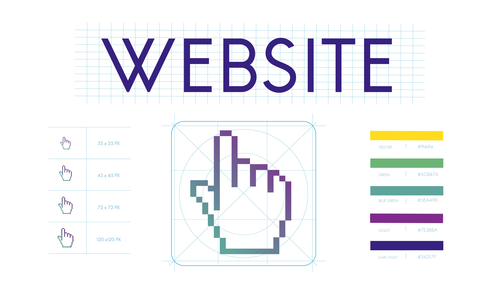
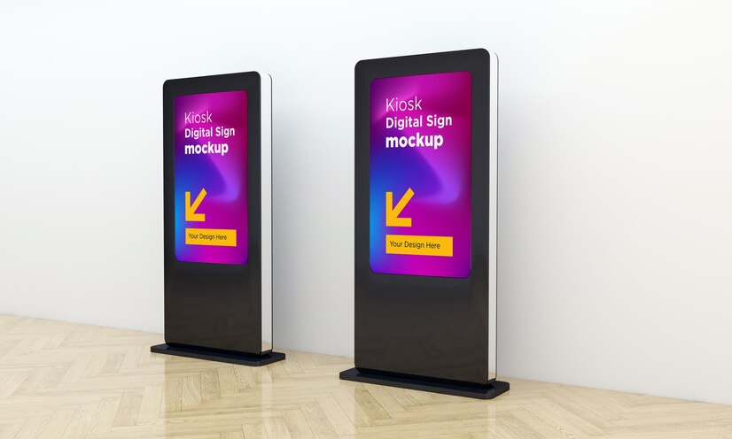
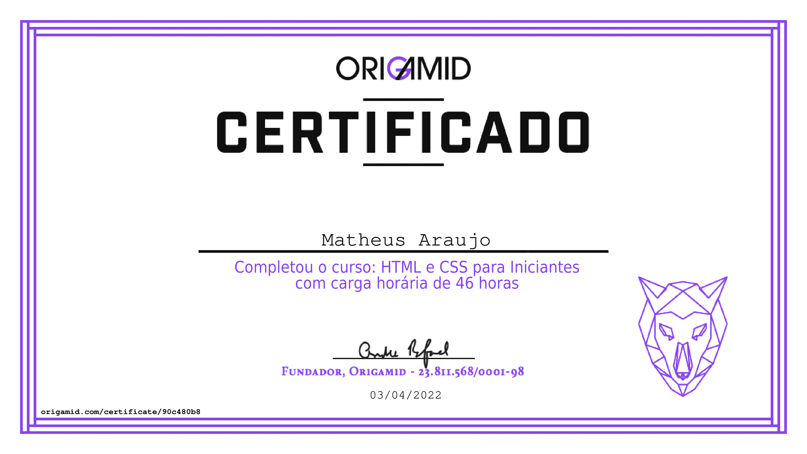

Introduçao
Matheus Araújo Desenvolvedor web
front-end.
Olá, meu nome é Matheus Araújo e atualmente sou estudante de Ciência da Computação. Focado no desenvolvimento web frontend, procuro desenvolver páginas 100% responsivas e com as melhores pŕaticas, buscando conhecimento continuamente

Formação
Estudo técnico ao longo dos anos. 🚀
-
Técnico em informática
Curso técnico em informática realizando de forma integrada ao Ensino médio na escola EEEP Professor Onélio Porto.
-
Ciência da Computação - IFCE
Cursando Ciência da computação pelo IFCE - Campus Maracanaú, atualmente no terceiro periodo, previsão de formação para 2025/2.
-
Certificados
Acesse meus Certificados obtidos durante todo o processo de especialização nos estudos.
Projetos
Projetos desenvolvidos ao longo da carreira. ☕
-

Portfolio Web
Web
Nesse projeto desenvolvi um Portifolio Web, utilizando apenas HTML, CSS e JavaScript, visando aperfeiçoamento pessoal no básico de front-end, com foco na responsividade.
Tecnologias utilizadas ↴
HTML CSS JavaScript -

Totem informartivo
Web
Projeto realizado durante o periodo de Estágio do curso técnico, feito com intuito de facilitar o acesso a informação sobre velórios organizados pela empresa. CRUD realizado com o framework Laravel (PHP) e SQL Server como database.
Tecnologias utilizadas ↴
PHP Laravel SQL Server
Meus certificados
Origamid HTML & CSS
JavaScript: Getting Started - pluralsight

Getting Started with Docker - pluralsight